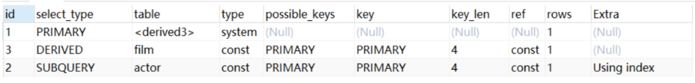
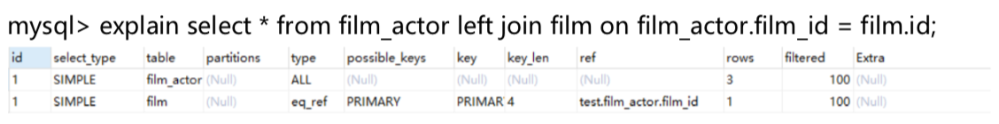
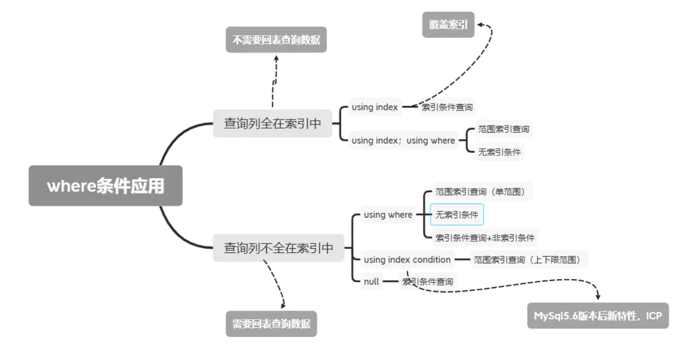

慢查询日志
MySQL慢查询就是在日志中记录运行比较慢的SQL语句，这个功能需要开启才能用。
long_query_time = 10 #指执行超过多久的SQL会被日志记录下来
log-slow-queries = /var/lib/mysql/mysql-slow.log #日志地址
log_queries_not_using_indexes #未使用索引查询
log_output #日志存储方式
Explain执行计划
explain select (select 1 from actor where id = 1) from (select * from film where id = 1)

id列
id列的编号是 select 的序列号，有几个 select 就有几个id，并且id的顺序是按 select 出现的 顺序增长的。id列越大执行优先级越高，id相同则从上往下执行，id为NULL最后执行。
select_type列
select_type 表示对应行是简单还是复杂的查询。
- simple：简单查询。查询不包含子查询和union
- primary：复杂查询中最外层的 select
- subquery：包含在 select 中的子查询(不在 from 子句中)
- derived：包含在 from 子句中的子查询。MySQL会将结果存放在一个临时表中，也称为派生表
- union：在 union 中的第二个和随后的 select
table列
这一列表示 explain 的一行正在访问哪个表。
当 from 子句中有子查询时，table列是 \
type列
这一列表示关联类型或访问类型，即MySQL决定如何查找表中的行，查找数据行记录的大概范围。
依次从最优到最差分别为:system > const > eq_ref > ref > range > index > ALL 。一般来说，得保证查询达到range级别，最好达到ref
NUll：mysql能够在优化阶段分解查询语句，在执行阶段用不着再访问表或索引。例如在索引列中选取最小值，可以单独查找索引来完成，不需要在执行时访问表
const：mysql能对查询的某部分进行优化并将其转化成一个常量。用于 primary key 或 unique key 的所有列与常数比较时，所以表最多有一个匹配行，读取1次，速度比较快。
system：是const的特例，表里只有一条元组匹配
eq_ref：primary key 或 unique key 索引的所有部分被连接使用 ，最多只会返回一条符合条件的记录。这可能是在 const 之外最好的联接类型了，简单的 select 查询不会出现这种 type。

ref：相比 eq_ref，不使用唯一索引，而是使用普通索引或者唯一性索引的部分前缀，索引要和某个值相比较，可能会找到多个符合条件的行
range：范围扫描通常出现在 in(), between ,> ,<, >= 等操作中。使用一个索引来检索给定 范围的行。
index：index:扫描全表索引，这通常比ALL快一些。
ALL：ALL:即全表扫描，意味着mysql需要从头到尾去查找所需要的行。通常情况下这需要增加索引来进行优化了
possible_keys列
这一列显示查询可能使用哪些索引来查找。
explain 时可能出现 possible_keys 有列，而 key 显示 NULL 的情况，这种情况是因为表中数据不多，mysql认为索引对此查询帮助不大，选择了全表查询。
key列
这一列显示mysql实际采用哪个索引来优化对该表的访问。
如果没有使用索引，则该列是 NULL。如果想强制mysql使用或忽视key列中的索引，在查询中使用 force index、ignore index。
key_len列
这一列显示了mysql在索引里使用的字节数，通过这个值可以算出具体使用了索引中的哪些列。如果字段允许为 NULL，需要1字节记录是否为 NULL。
key_len计算规则如下：
char(n)：n字节长度，varchar(n)：2字节存储字符串长度，如果是utf-8，则长度 3n +2，tinyint：1字节，smallint：2字节 ，int：4字节，bigint：8字节 ，date：3字节，timestamp：4字节，datetime：8字节
ref列
这一列显示了在key列记录的索引中，表查找值所用到的列或常量，常见的有:const(常量)，字段名(例:film.id)
rows列
这一列是mysql估计要读取并检测的行数，注意这个不是结果集里的行数。
Extra列
这一列展示的是额外信息。常见的重要值如下。
Using index：使用覆盖索引
Using where，Using index condition：

Using temporary：mysql需要创建一张临时表来处理查询。出现这种情况一般是要进行 优化的，首先是想到用索引来优化。
Using filesort：将用外部排序而不是索引排序，数据较小时从内存排序，否则需要在磁盘 完成排序。这种情况下一般也是要考虑使用索引来优化的。
Select tables optimized away：使用某些聚合函数(比如 max、min)来访问存在索引的某个字段